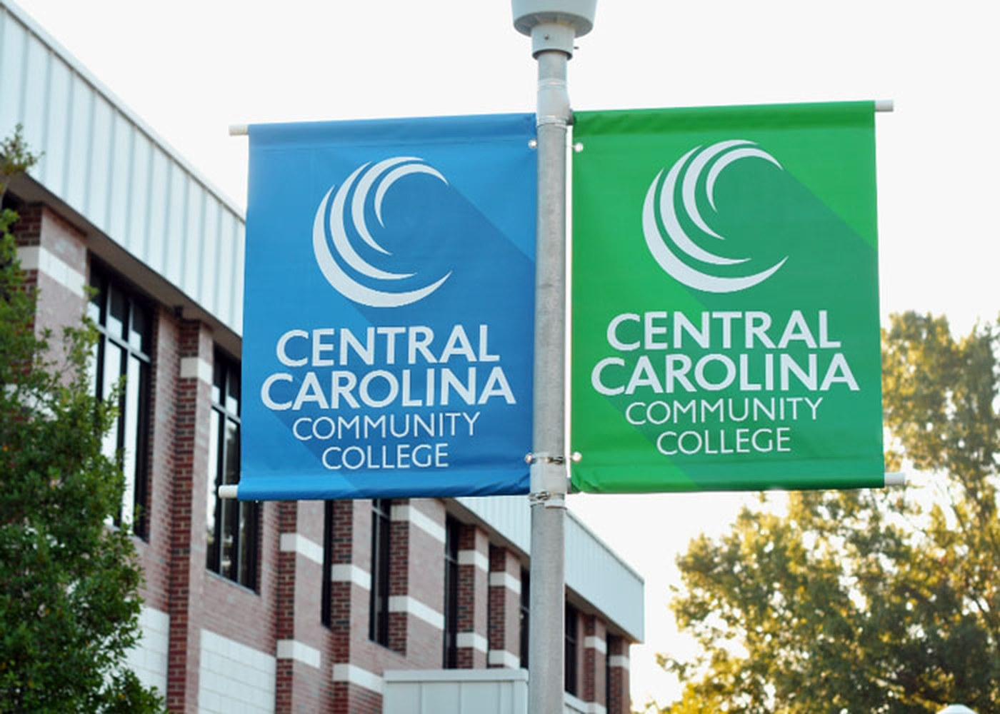
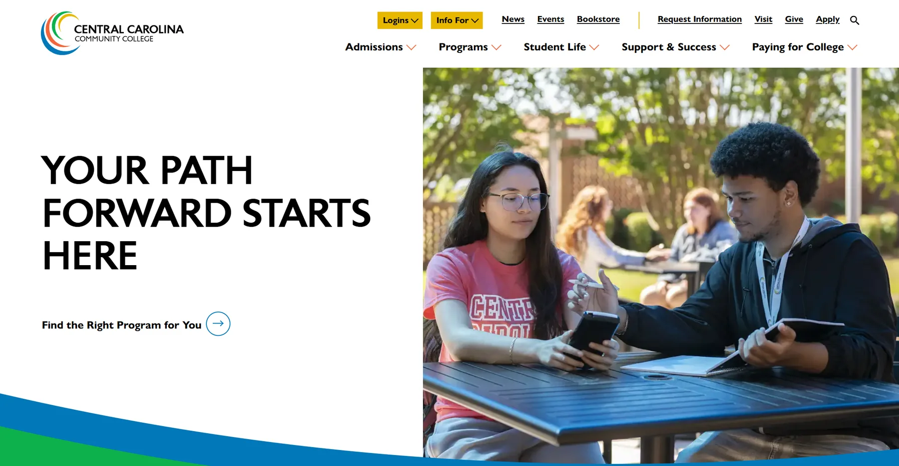
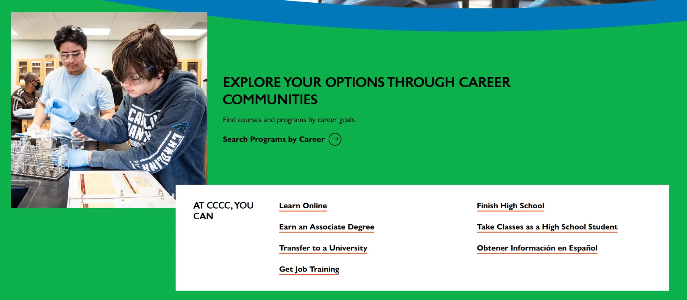
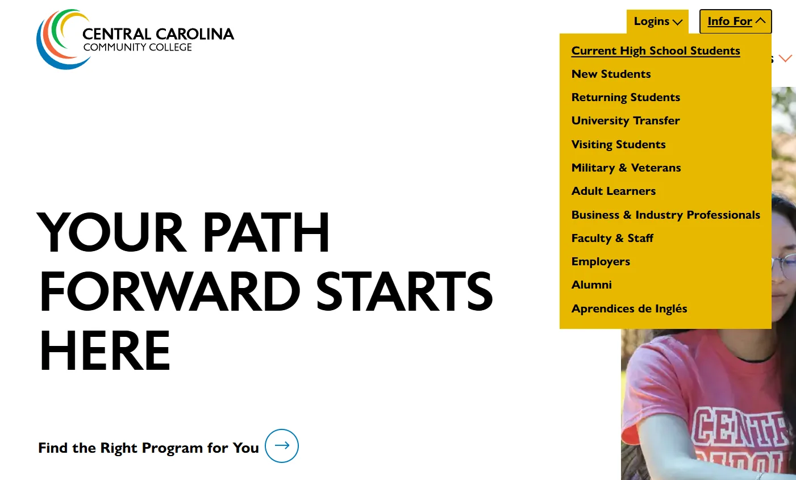
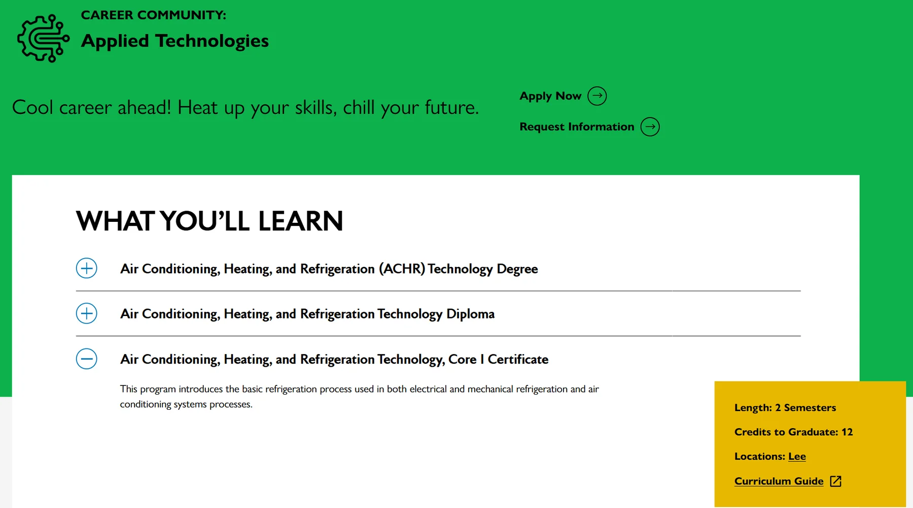
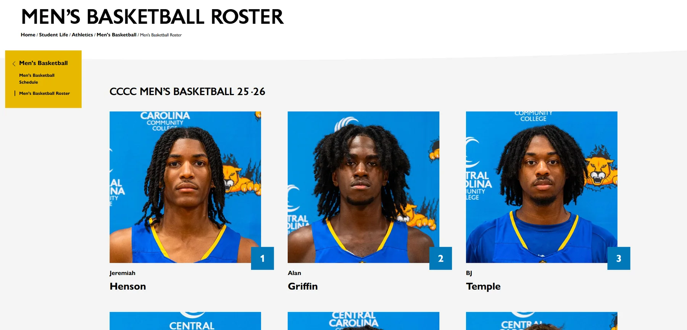
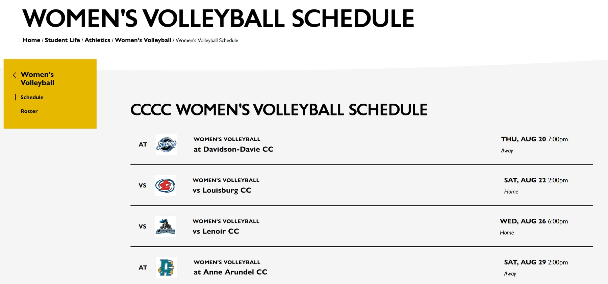
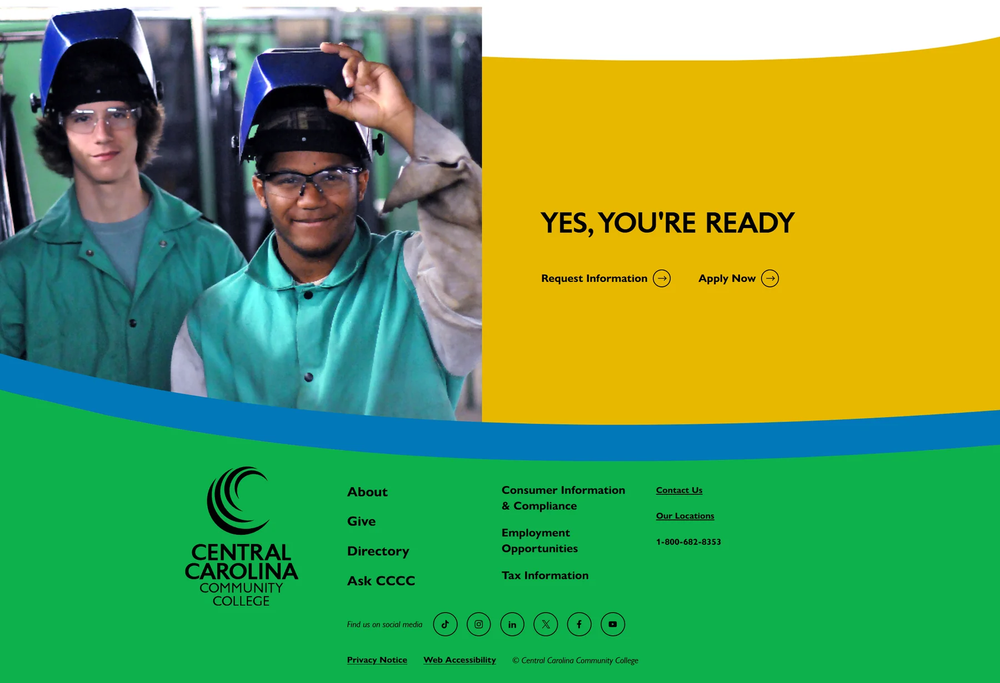

A community college with a vast catalog, restructured so every audience can find its way in.

Central Carolina Community College serves a wide region of North Carolina, with a catalog running from associate degrees and diplomas to certificates, job training, and high school programs, for audiences from first-time students to veterans, employers, and alumni.
Students could not navigate the certificate, diploma, and degree offerings. The homepage opened no clear paths into the sections where that information lived, the many audiences had no routes of their own, and athletics was an afterthought.
The old homepage offered four broad buckets, no audience paths, and athletics as a footer link. The restructure gave every audience a door and moved the teams into the college's story.
How might we help every kind of student quickly recognize the opportunity that fits them?
Every move below is an answer to that question.
I rebuilt the homepage around the two questions students arrive with: what career do I want, and what can I do here? Career Communities group programs by career goal, and a task list opens the college's main paths, from an associate degree to finishing high school or reading it all in Spanish. Each is a direct route into the architecture rather than a menu to decode.


The old site addressed every audience at once. I gave each a dedicated path in the Info For menu, from high school students and adult learners to veterans, employers, and alumni. Visitors identify themselves in one click and land in content written for them.

Certificates, diplomas, and degrees were hard to tell apart and harder to compare. I built a finder that searches by career and routes to a career community page laying out every credential together: what you will learn, length, credits, locations, and the curriculum guide.

Athletics had no real home. I gave it a highlighted space and built roster and schedule templates every team shares, so each sport publishes consistently without custom work. The teams became part of the college's story instead of a footnote.


The redesign turned a large, hard to navigate catalog into clear routes. Students search by career or by goal, twelve audiences each have a path written for them, and athletics moved from a footer link into the college's story.

I led discovery research, information architecture, UX design, and UX copy on this project. Creative direction, graphic design, and front-end development came from the idfive team.